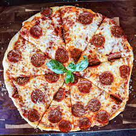

Peperoni pizza

Made of pizza crust, pizza sauce, cheese, and pepperoni. Pepperoni is basically an American version of salami.
Pepperoni is a meat mixture of beef and pork that has been cured and seasoned with paprika and chili powder.
Ingredients:
- 16 ounces pizza dough, store-bought or homemade (I like this no-knead version, though note that this recipe makes enough dough for 2 pizzas)
- 1/2 cup pizza sauce
- 18 to 20 slices pepperoni
- 12 ounces mozzarella cheese, grated
- 1/2 teaspoon ground black pepper
- 1 teaspoon fresh oregano, optional
- Flour for rolling and shaping dough
For the Quick Pizza Sauce:
- 1/2 cup tomato sauce (no salt)
- 1/2 teaspoon kosher salt
- 1/2 teaspoon ground black pepper
- 1/2 teaspoon granulated garlic
- 1/2 teaspoon granulated onion
- 1/4 teaspoon red pepper flakes
- 1 teaspoon olive oil